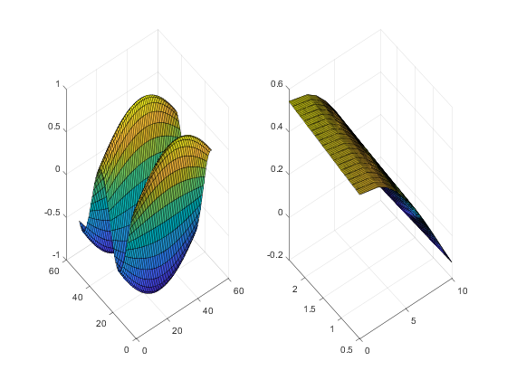

Contents
Default Grid based Interpolation
close all
bl_run_matlab_exa = false;
bl_run_matlab_exa3d = true;
bl_run_coh_z_exa = true;
Example from Matlab
if (bl_run_matlab_exa) figure(); % Generate Sample Data ar_x = (1:0.3:5)'; ar_y = ar_x'; V = cos(ar_x) .* sin(ar_y); n = length(ar_x); subplot(1,2,1); surf(1:n,1:n,V); % Interpolatant Index Points F = griddedInterpolant(V); % Interpolate on finder grid [mt_xq,mt_yq] = ndgrid(1:0.2:n); mt_vq = F(mt_xq, mt_yq); subplot(1,2,2); surf(mt_xq',mt_yq',mt_vq); end
Matlab Example Expanded to 3D
if (bl_run_matlab_exa3d) figure(); % Generate Sample Data ar_x = (1:0.3:2)'; n = length(ar_x); ar_y = ar_x'; ts_z = reshape(zeros(n, 1) + ar_x', [1,n,n]); V = (cos(ar_x) .* sin(ar_y)) .* tan(ts_z) ; % Interpolatant Index Points F = griddedInterpolant(V); % Interpolate on finer even grid [ts_xq, ts_yq, ts_zq] = ndgrid(1:0.5:n); mt_vq = F(ts_xq, ts_yq, ts_zq); % Interpolate on finer uneven grid rng(123); m = 7; vec_x = sort(rand([1,m])*(n-1) + 1); vec_y = sort(rand([1,m])*(n-1) + 1); vec_z = sort(rand([1,m])*(n-1) + 1); ts_xqr = zeros([m,m,m]) + vec_x'; ts_yqr = zeros([m,m,m]) + vec_y; ts_zqr = zeros([m,m,m]) + reshape(zeros(m, 1) + vec_z, [1,m,m]); mt_vqr = F(ts_xqr, ts_yqr, ts_zqr); end
Adjust Matlab Example to be More Similar to our Use Case
x = coh-on-hand grid y = productivity shock grid (assume it is equi-distance)
if (bl_run_coh_z_exa) figure(); [fl_min_x, fl_max_x, it_n_x] = deal(0.01, 10, 50); [fl_min_y, fl_max_y, it_n_y] = deal(0.50, 2.50, 50); ar_x = linspace(fl_min_x, fl_max_x, it_n_x); ar_y = linspace(fl_min_y, fl_max_y, it_n_y); fl_x_gap = ar_x(2) - ar_x(1); fl_y_gap = ar_x(2) - ar_x(1); mt_v = cos(ar_x') * sin(ar_y); subplot(1,2,1); surf(1:1:it_n_x, 1:1:it_n_y, mt_v); % Interpolatant Index Points F = griddedInterpolant(mt_v); % Interpolate on finder grid [mt_xq, mt_yq] = ndgrid(fl_min_x:(fl_x_gap/2):fl_max_x, ... fl_min_y:(fl_y_gap/2):fl_max_y); mt_vq = F(mt_xq, mt_yq); subplot(1,2,2); surf(mt_xq, mt_yq, mt_vq); end